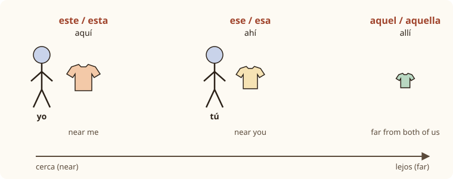

Lesson 13: Shopping and Clothes¶
De compras: la ropa
Shopping is where your Spanish meets the real world: you need to ask for a colour and a size, try something on, say that it is too big, ask the price and pay. This lesson gives you the words for clothes and colours, the phrases of a shop, prices with big numbers, and three pieces of grammar that you will use all the time: the demonstratives (this, that, that one over there), the direct object pronouns (it, them), and comparisons (cheaper than, as nice as).
Learning outcomes
By the end of this lesson you will be able to:
- name clothes and colours, and make colours agree with what they describe;
- ask for a size, try clothes on and say how they fit;
- ask and understand prices, including numbers above a thousand, in euros and pesos;
- point things out with este, ese and aquel, and use esto and eso;
- replace a noun with lo, la, los, las: me lo llevo;
- compare things with más … que, menos … que, tan … como, mejor and peor.
masculinefeminineplural
13.1 Dialogue: a jacket for the winter¶
Emma, a student from Dublin, is spending a year in Madrid. It is November and she needs a warm jacket. She goes into a clothes shop.
- Dependienta: Buenas tardes. ¿La puedo ayudar en algo? — Good afternoon. Can I help you with anything?
- Emma: Sí, gracias. Busco una chaqueta para el invierno. — Yes, thanks. I'm looking for a jacket for the winter.
- Dependienta: Muy bien. ¿De qué color la quiere? — Very well. What colour do you want it in?
- Emma: Negra o azul oscuro. Me gusta mucho esa chaqueta de ahí. ¿La tiene en azul? — Black or dark blue. I really like that jacket there. Do you have it in blue?
- Dependienta: Sí, aquí está. ¿Qué talla tiene? — Yes, here it is. What size are you?
- Emma: La treinta y ocho, creo. ¿Puedo probármela? — A thirty-eight, I think. Can I try it on?
- Dependienta: Claro. Los probadores están al fondo, a la derecha. — Of course. The fitting rooms are at the back, on the right.
- Emma: Me queda un poco grande. ¿Tiene una talla más pequeña? — It's a bit big on me. Do you have a smaller size?
- Dependienta: Sí, tome, la treinta y seis. — Yes, here you are, the thirty-six.
- Emma: Esta me queda perfecta. ¿Cuánto cuesta? — This one fits me perfectly. How much is it?
- Dependienta: Ochenta y nueve euros. Está rebajada. — Eighty-nine euros. It's reduced.
- Emma: Es más barata que la negra. Me la llevo. ¿Puedo pagar con tarjeta? — It's cheaper than the black one. I'll take it. Can I pay by card?
- Dependienta: Por supuesto. ¿Algo más? — Of course. Anything else?
- Emma: ¿Cuánto cuestan aquellos zapatos marrones? — How much are those brown shoes over there?
- Dependienta: Sesenta euros. ¿Qué número tiene? — Sixty euros. What size do you take?
- Emma: El treinta y nueve… pero hoy no, gracias. Solo la chaqueta. — Thirty-nine… but not today, thanks. Just the jacket.
Notice:
- Three words for "that": esa chaqueta (near the shop assistant), aquellos zapatos (further away), and esta for "this one", the one Emma is wearing.
- Small words replace nouns: ¿La tiene en azul? ("Do you have it?"), probármela ("try it on"), me la llevo ("I'll take it"). La stands for la chaqueta.
- Clothes size is la talla; shoe size is el número.
- Me queda grande ("it's big on me") uses quedar, a verb of the gustar type (Lesson 12): the clothes are the subject.
13.2 Vocabulary: clothes, colours and the shop¶
Clothes¶
| Spanish (Spain) | Also heard in Latin America | English |
|---|---|---|
| la camisa | the shirt | |
| la camiseta | la playera (Mexico), la remera (Argentina) | the T-shirt |
| el jersey | el suéter | the sweater, jumper |
| la chaqueta | la chamarra (Mexico), la campera (Argentina) | the jacket |
| el abrigo | the coat | |
| los pantalones | the trousers | |
| los vaqueros | los jeans | the jeans |
| la falda | la pollera (Argentina, Uruguay) | the skirt |
| el vestido | the dress | |
| el traje | the suit | |
| la corbata | the tie | |
| los zapatos | the shoes | |
| las zapatillas (de deporte) | los tenis (Mexico) | the trainers, sneakers |
| las botas | the boots | |
| los calcetines | the socks | |
| el sombrero / la gorra | the hat / the cap | |
| la bufanda | the scarf | |
| las gafas (de sol) | los lentes, los anteojos | the glasses (sunglasses) |
Table 13.1. Clothes. Spain's words are understood everywhere; the second column shows common regional alternatives.
Common mistake: la ropa is singular
La ropa means "clothes" but is a singular word: Esta ropa es muy bonita ("These clothes are very nice"). And los pantalones is usually plural, as in English, though el pantalón is also correct and common in shops.
Colours¶
| Spanish | Forms | English |
|---|---|---|
| blanco | blanco, blanca, blancos, blancas | white |
| negro | negro, negra, negros, negras | black |
| rojo | rojo, roja, rojos, rojas | red |
| amarillo | amarillo, amarilla, amarillos, amarillas | yellow |
| morado | morado, morada, morados, moradas | purple |
| verde | verde, verdes | green |
| azul | azul, azules | blue |
| gris | gris, grises | grey |
| marrón | marrón, marrones | brown (Spain; café in Mexico) |
| rosa | rosa | pink (rosado in much of Latin America) |
| naranja | naranja | orange |
Table 13.2. Colours and their forms.
Colours are adjectives, so they follow the rules of Lesson 7: they come after the noun and agree with it.
- Colours in -o have four forms: un vestido negro, una falda negra, unos zapatos negros, unas botas negras.
- Colours in -e or a consonant have two forms, singular and plural: una camisa verde, unas camisas verdes, un abrigo azul, unos abrigos azules.
- Colours that are also the names of things (rosa, "rose"; naranja, "orange") often do not change: una camiseta naranja, unos calcetines naranja. The plural rosas, naranjas is also accepted. To avoid the question, Latin Americans often say rosado and anaranjado, which agree normally.
- With claro ("light") and oscuro ("dark"), the colour does not change at all: una chaqueta azul oscuro, unos pantalones verde claro.
To ask the colour: ¿De qué color es? ("What colour is it?") or ¿De qué color la quiere? ("What colour do you want it in?").
In the shop¶
| Spanish | English |
|---|---|
| la tienda / la tienda de ropa | the shop / the clothes shop |
| la zapatería | the shoe shop |
| el mercado | the market |
| el centro comercial | the shopping centre, mall |
| el dependiente / la dependienta | the shop assistant |
| el probador | the fitting room |
| la caja | the till, checkout |
| la talla | the size (clothes) |
| el número | the size (shoes) |
| el precio | the price |
| barato / caro | cheap / expensive |
| las rebajas | the sales (Spain) |
| la oferta / el descuento | the special offer / the discount |
| en efectivo | in cash |
| con tarjeta | by card |
| el recibo / el tique | the receipt |
| el cambio | the change (money) |
Table 13.3. Words for shops and paying. In Spain the change is also la vuelta; in parts of South America it is el vuelto.
Useful phrases¶
| Spanish | English |
|---|---|
| Solo estoy mirando, gracias. | I'm just looking, thanks. |
| Busco unos pantalones negros. | I'm looking for some black trousers. |
| ¿Lo tiene en otro color? | Do you have it in another colour? |
| ¿Tiene una talla más grande? | Do you have a bigger size? |
| ¿Puedo probármelo? | Can I try it on? |
| Me queda bien. / Me queda grande. | It fits me. / It's too big for me. |
| ¿Cuánto cuesta? / ¿Cuánto cuestan? | How much is it? / How much are they? |
| ¿Cuánto es? | How much is it (altogether)? |
| Me lo llevo. | I'll take it. |
| ¿Se puede cambiar? | Can it be exchanged? |
Table 13.4. Phrases for shopping.
Fitting: the verb quedar¶
quedar works like gustar: the clothes are the subject, and the person is me, te, le. So it is queda for one item and quedan for several, and the adjective agrees with the clothes:
- La falda me queda corta. — The skirt is too short for me.
- Los pantalones me quedan largos. — The trousers are too long for me.
- Ese vestido te queda muy bien. — That dress really suits you.
Cuesta and cuestan
The verb costar ("to cost") has the o→ue change of Lesson 10, and like a price in English it agrees with the thing: ¿Cuánto cuesta la camisa? but ¿Cuánto cuestan los zapatos?
13.3 Grammar: this, that and that one over there¶
Three distances¶
English has two demonstratives, this and that. Spanish has three, and each has four forms to agree with the noun.

| Masculine | Feminine | Masc. plural | Fem. plural | Place word | |
|---|---|---|---|---|---|
| this (near me) | este jersey | esta falda | estos zapatos | estas botas | aquí (here) |
| that (near you) | ese jersey | esa falda | esos zapatos | esas botas | ahí (there) |
| that (over there) | aquel jersey | aquella falda | aquellos zapatos | aquellas botas | allí (over there) |
Table 13.5. The demonstratives. Practice hides them.
Two things to watch:
- The masculine singular has no -o: este, ese, aquel, but the plural has -os: estos, esos, aquellos.
- In everyday speech ese is used for most things that are not right next to you. aquel is for things clearly far away, in space or in time: en aquella época, "in those days".
This one, that one¶
The same words stand alone, without a noun, to mean "this one, that one":
- ¿Qué camisa prefieres, esta o esa? — Which shirt do you prefer, this one or that one?
- Me gustan más aquellos. — I like those over there better.
Éste or este?
Older books write the pronouns with an accent, éste, ésa, aquél, to show that no noun follows. The current spelling rules of the Spanish Academies no longer require it, and this book writes them without accents. You will still see the accent in older texts.
Esto, eso, aquello: for things without a name¶
When you do not know what something is, or you mean an idea or a situation rather than a particular noun, use the neuter forms. They never change and never go before a noun.
- ¿Qué es esto? — What is this?
- Eso es muy caro. — That's very expensive.
- ¿Cuánto cuesta eso? — How much is that? (pointing at something whose name you don't know)
- Eso es. — That's it. Exactly.
13.4 Grammar: it and them, and comparing¶
The direct object pronouns¶
A direct object is the person or thing that receives the action: in "I'm buying the shirt", the shirt. To avoid repeating it, English says "I'm buying it". Spanish uses these pronouns:
| Replaces | Pronoun | Example |
|---|---|---|
| a masculine singular noun | lo | ¿El abrigo? Lo compro. — The coat? I'll buy it. |
| a feminine singular noun | la | ¿La camisa? La compro. — The shirt? I'll buy it. |
| a masculine plural noun | los | ¿Los zapatos? Los compro. — The shoes? I'll buy them. |
| a feminine plural noun | las | ¿Las botas? Las compro. — The boots? I'll buy them. |
Table 13.6. Lo, la, los, las. They agree with the noun they replace.
The other persons use pronouns you already know: me (me), te (you), nos (us), os (you all): ¿Me ayuda, por favor?, "Can you help me, please?"
The position is the same as for reflexive pronouns (Lesson 11): before the conjugated verb, or attached to an infinitive.
- La quiero en azul. — I want it in blue.
- No los necesito. — I don't need them.
- Voy a comprarlo. = Lo voy a comprar. — I'm going to buy it.
Common mistake: forgetting the gender
"It" is lo or la depending on the noun, not on the thing itself. A shirt is feminine, so la; a jumper is masculine, so lo. ¿La camisa? Lo compro is a mistake English speakers often make.
Me lo llevo and probármelo¶
Two shopping phrases combine a reflexive pronoun with lo or la. The reflexive pronoun always comes first:
- Me lo llevo. / Me la llevo. — I'll take it. (llevarse, "to take away")
- Me los llevo. — I'll take them.
- ¿Puedo probármelo? / ¿Me lo puedo probar? — Can I try it on? (probarse, o→ue, "to try on")
When two pronouns are attached to an infinitive, a written accent keeps the stress where it was: probar → probármelo [proh-BAR-meh-loh]. Lesson 1 explains why: the word now ends in a vowel with the stress three syllables from the end, and such words always carry a written accent.
Comparing things¶
| Structure | Meaning | Example |
|---|---|---|
| más + adjective + que | more … than, -er than | Esta camisa es más cara que esa. — This shirt is more expensive than that one. |
| menos + adjective + que | less … than | El mercado es menos caro que la tienda. — The market is less expensive than the shop. |
| tan + adjective + como | as … as | Estos zapatos son tan cómodos como aquellos. — These shoes are as comfortable as those. |
| mejor que | better than | Esta tela es mejor que la otra. — This fabric is better than the other one. |
| peor que | worse than | La calidad es peor que antes. — The quality is worse than before. |
| mayor que / menor que | older than / younger than | Mi hermana es mayor que yo. — My sister is older than me. |
Table 13.7. Comparisons. The adjective still agrees with the noun it describes.
Notes:
- The adjective agrees as usual: Las botas son más caras que los zapatos.
- Do not say más bueno or más malo for quality: say mejor and peor. Their plurals are mejores and peores.
- After que and como, use yo and tú, not mí and ti: Eres más alto que yo.
- The most: put el, la, los, las before más: Esta es la chaqueta más barata de la tienda, "This is the cheapest jacket in the shop". "In" after a superlative is de.
Prices and big numbers¶
Lesson 3 took you to a thousand. Above that, Spanish builds numbers with mil ("thousand"), which does not take "one" and does not change in the plural, and millón ("million"), which does.
| Number | Spanish |
|---|---|
| 1 000 | mil |
| 1 250 | mil doscientos cincuenta |
| 2 000 | dos mil |
| 15 900 | quince mil novecientos |
| 100 000 | cien mil |
| 500 000 | quinientos mil |
| 1 000 000 | un millón |
| 3 000 000 | tres millones |
Table 13.8. Big numbers. Spanish writes a point or a space for thousands (1.250 or 1 250) and a comma for decimals in Spain (12,50 €); Mexico and some other countries use the English system (1,250 and 12.50).
- Never un mil: 1,000 is just mil, and 2,000 is dos mil, never dos miles.
- millón takes de before a noun: un millón de pesos, dos millones de euros.
- Hundreds agree with a feminine noun: doscientos euros, but doscientas libras ("two hundred pounds").
Saying prices:
- 12,50 €: doce euros con cincuenta, or simply doce cincuenta
- 99,99 €: noventa y nueve euros con noventa y nueve céntimos
- $350 in Mexico: trescientos cincuenta pesos
- $1.200 in Argentina or Chile: mil doscientos pesos
Worked example: choosing between two jackets
You compare a black jacket (120 €) and a blue one (89 €). The blue one fits better.
- Price, with más … que: La chaqueta negra es más cara que la azul.
- The other way round, with menos: La azul es menos cara que la negra.
- Fit, with mejor: La azul me queda mejor.
- Decision, with a pronoun: Me llevo la azul. Me la llevo.
- Price: Son ochenta y nueve euros.
13.5 Practice¶
Este, ese, aquel¶
Point and say, then listen.
- Este sombrero es muy bonito. — This hat is very pretty. (in my hand)
- Esa bufanda es de lana. — That scarf is wool. (near you)
- Aquellas botas son muy caras. — Those boots are very expensive. (in the window across the street)
- ¿Cuánto cuestan estos calcetines? — How much are these socks?
- ¿Qué es eso? — What's that?
It and them¶
| Question | Answer |
|---|---|
| ¿Compras el vestido? | Sí, lo compro. |
| ¿Quieres la gorra? | Sí, la quiero. |
| ¿Necesitas los calcetines? | No, no los necesito. |
| ¿Te pruebas las botas? | Sí, me las pruebo. |
| ¿Te llevas el abrigo? | Sí, me lo llevo. |
Table 13.9. Switch on Practice and write the pronoun.
At the till¶
- Hola, buenas. ¿Cuánto es? — Hi. How much is it?
- Son cuarenta y cinco euros con veinte. — That's forty-five euros twenty.
- ¿Aceptan tarjeta? — Do you take cards?
- Sí, claro. ¿Quiere una bolsa? — Yes, of course. Do you want a bag?
- No, gracias. ¿Me da el tique, por favor? — No, thanks. Can I have the receipt, please?
Say it
Act out a scene in a clothes shop with a partner. The customer looks for a garment, asks for a colour and size, tries it on, says how it fits, asks the price and pays. Use at least one demonstrative, one pronoun (lo, la, los, las) and one comparison. For example:
Busco una camisa blanca. ¿Tiene esta en la talla cuarenta? Me queda un poco pequeña. ¿Tiene una más grande? Esta me queda mejor. ¿Cuánto cuesta? Me la llevo.
13.6 Culture: shopping in Spain and Latin America¶
Opening hours. In Spain, many small shops open from about ten to two, close for lunch, and open again from about five until eight or half past eight. Department stores and shopping centres stay open all day. Sunday opening depends on the region and the city. In large Latin American cities, shopping centres are usually open every day until late, and they are popular places to spend a weekend afternoon, especially in hot or rainy weather.
Sales. Spain has two traditional sales seasons, las rebajas: in winter, starting just after Three Kings' Day on 6 January, and in summer, starting around the beginning of July. Shop windows fill with signs saying rebajas, liquidación ("clearance") and percentages off: un treinta por ciento de descuento.
Markets. Most Spanish towns have a covered mercado municipal for fresh food, and a weekly open-air market, el mercadillo, for clothes and household goods. In Mexico the open-air street market is called el tianguis, a word from Nahuatl, the language of the Aztecs. Across Latin America, craft markets sell textiles, ceramics and jewellery.
Bargaining. In shops, prices are fixed everywhere. In some street and craft markets in Latin America, a little friendly bargaining, regatear, is normal: ¿Me lo deja más barato? ("Can you let me have it cheaper?"). In Spain bargaining is rare, except perhaps at a flea market.
Currencies. Spain uses the euro (el euro, divided into céntimos). Mexico, Argentina, Chile, Colombia and Uruguay each have their own peso; Peru has the sol; Guatemala the quetzal; Ecuador and El Salvador use the US dollar. Mexican and other pesos are written with the $ sign, so a price of $500 in Mexico City is in pesos, not dollars.
Sizes. Spain uses European sizes for clothes (36, 38, 40 …) and shoes (37, 38, 39 …). In Mexico and much of Latin America, sizes often follow the US system or are given as chica, mediana, grande (in Spain pequeña, mediana, grande). Always try clothes on: ¿Puedo probármelo?
13.7 Summary¶
Summary
- Colours follow the noun and agree: una falda negra, unos abrigos azules. Rosa and naranja often stay the same; azul oscuro and verde claro never change.
- Size: la talla for clothes, el número for shoes. Fit: me queda bien / grande / pequeño, agreeing with the clothes: me quedan largos.
- Price: ¿Cuánto cuesta? / ¿Cuánto cuestan? / ¿Cuánto es? mil never takes un or a plural; un millón de euros.
- Demonstratives: este, esta, estos, estas (here), ese, esa, esos, esas (there), aquel, aquella, aquellos, aquellas (over there). esto, eso, aquello for things without a name.
- Direct object pronouns: lo, la, los, las agree with the noun they replace and go before the verb or on the end of an infinitive: lo compro, voy a comprarlo, me lo llevo.
- Comparisons: más … que, menos … que, tan … como, mejor, peor, mayor, menor.
13.8 Exercises¶
Exercise 1
Give the Spanish for "the red shoes".
Answer
los zapatos rojos. los zapatos rojos. Plural masculine noun, so rojos.
Exercise 2
Give the Spanish for "a green skirt".
Answer
una falda verde. una falda verde. Verde has the same form for masculine and feminine.
Exercise 3
Complete with the right form of este: ___ camisetas son muy baratas.
Answer
Estas. Estas camisetas son muy baratas. Feminine plural.
Exercise 4
Complete with the right form of aquel: ¿Cuánto cuesta ___ abrigo?
Answer
aquel. ¿Cuánto cuesta aquel abrigo? Masculine singular, with no -o.
Exercise 5
Answer with a pronoun: ¿Compras la bufanda? — Yes, I'm buying it.
Answer
Sí, la compro. Sí, la compro. La bufanda is feminine.
Exercise 6
How do you say "I'll take them" about some boots (las botas)?
Answer
Me las llevo. Me las llevo.
Exercise 7
Write 2,500 in words.
Answer
dos mil quinientos. dos mil quinientos. Mil does not change in the plural.
Exercise 8
Ask the price of some trousers.
Answer
¿Cuánto cuestan los pantalones? ¿Cuánto cuestan los pantalones? Plural subject, so cuestan.
Exercise 9
Translate: "This shop is cheaper than that one."
Answer
Esta tienda es más barata que esa. Tienda is feminine, so esta, barata and esa.
Exercise 10
Correct the two mistakes: ¿El jersey? La compro. Es más bueno que el otro.
Answer
¿El jersey? Lo compro. Es mejor que el otro. El jersey is masculine, so lo; for quality, use mejor rather than más bueno.
13.9 Quiz¶
Quiz: shopping and clothes
Exercise 11
___ zapatos de aquí son muy cómodos.
- Este
- Estos
- Estas
- Esto
Answer
Estos
Zapatos is masculine plural, so estos.
Exercise 12
¿La camiseta? Sí, ___ quiero en negro.
- lo
- la
- los
- le
Answer
la
La camiseta is feminine singular, so la.
Exercise 13
Los pantalones me ___ largos.
Hint: quedar, plural
Answer
quedan
The trousers are the subject, so quedan.
Exercise 14
Esta chaqueta es ___ cara como aquella.
Answer
tan
tan … como means as … as.
Exercise 15
Write 3,000 in words.
Answer
tres mil
Exercise 16
Match the Spanish to the English.
| A | B |
|---|---|
| la talla | in cash |
| el número | the fitting room |
| en efectivo | the size of clothes |
| el probador | the size of shoes |
Answer
la talla — the size of clothes; el número — the size of shoes; en efectivo — in cash; el probador — the fitting room
Exercise 17
Put the words in order: "I'm going to try it on."
Words: lo / voy / a / probar. / Me
Answer
Me lo voy a probar.
Exercise 18
Tap the wrong word.
Mi hermano compra unas camisas blancos.
Answer
Wrong word: blancos.
Corrected: Mi hermano compra unas camisas blancas.
Camisas is feminine plural, so blancas.
Exercise 19
Write what you hear.
Dictation. Have someone read the sentence aloud, then write it down.
Busco unos pantalones negros de la talla cuarenta.
Answer
Busco unos pantalones negros de la talla cuarenta.
Exercise 20
Say it aloud.
¿Cuánto cuesta esta camisa? Me la llevo.
Answer
Say: ¿Cuánto cuesta esta camisa? Me la llevo.